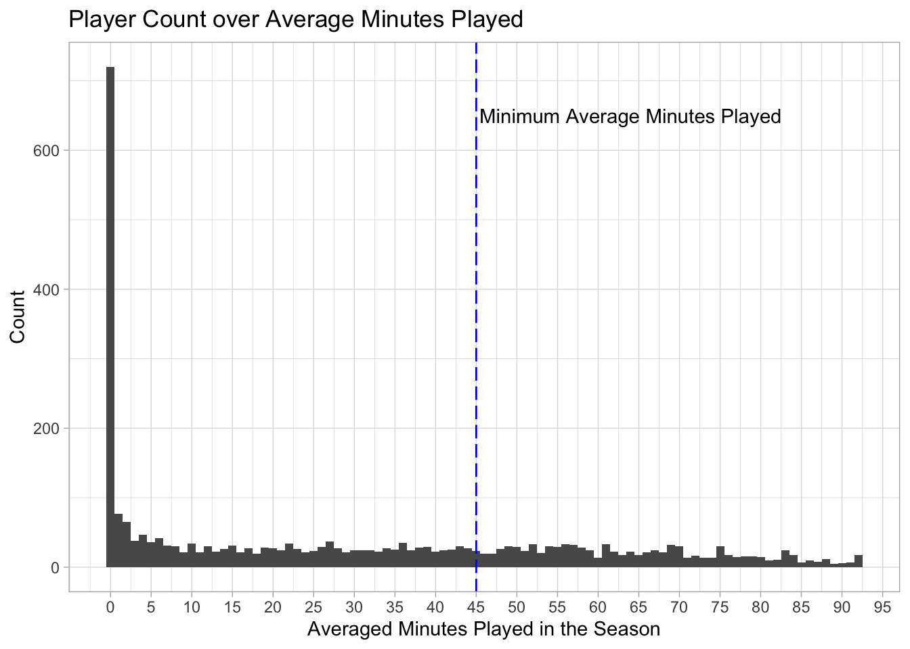
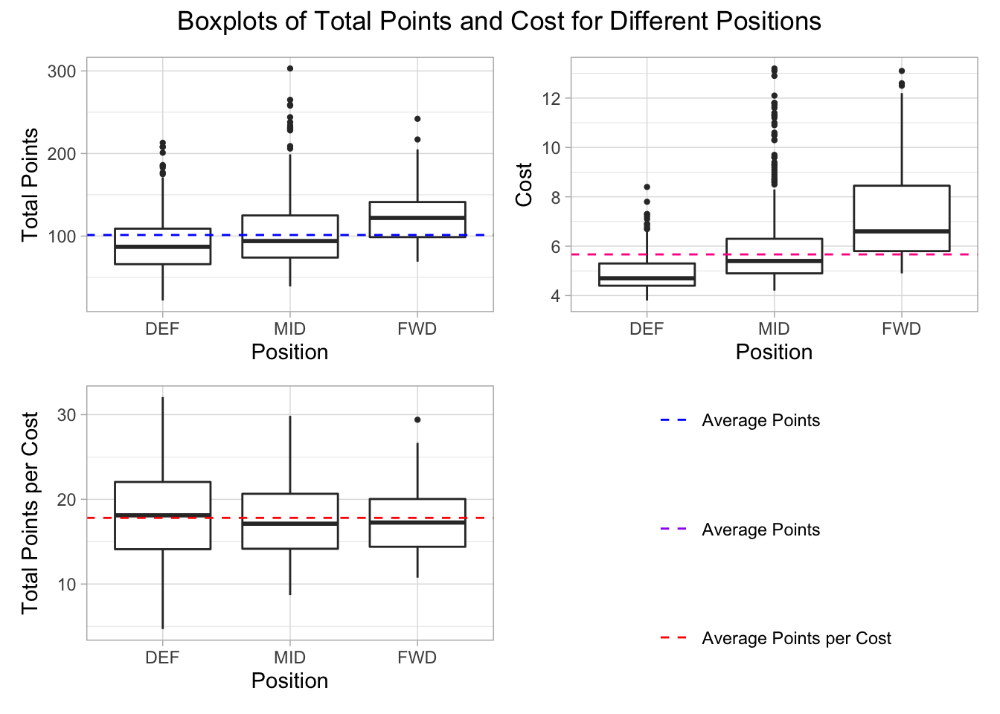
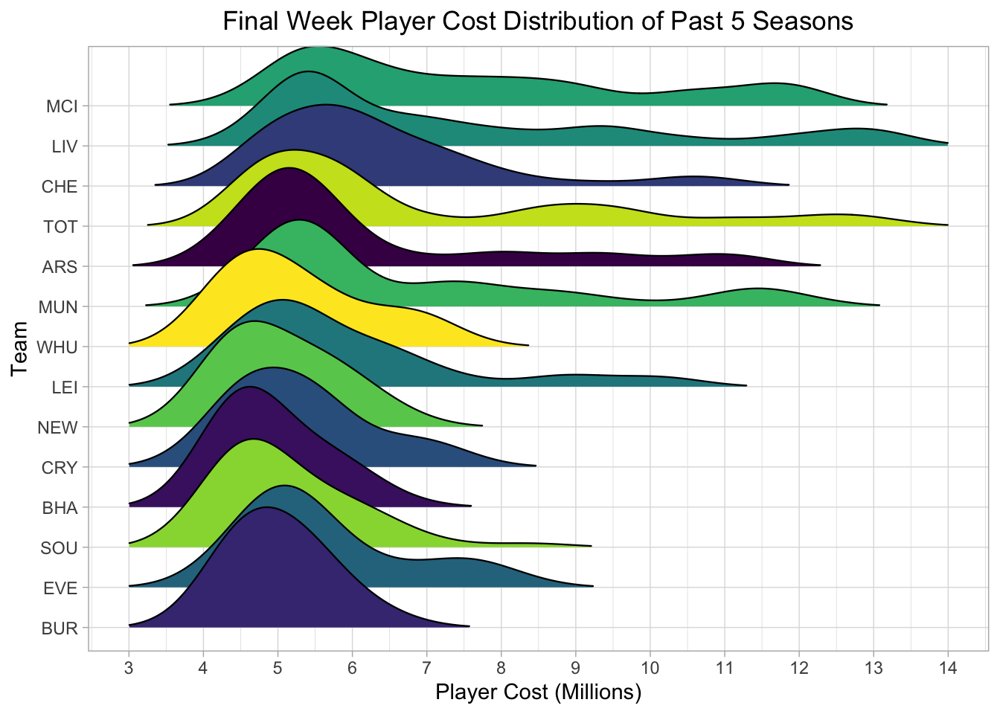

Chapter 4 Results
Plot 1

As can be seen from the graph, there is a positive correlation between total points and soccer player cost. This is expected as soccer players who score more points are more valuable, hence their cost should increase. However, there are large deviations from the correlation shown in the best fit line. If a soccer player lies above the best fit line, it shows that they have a high points per cost output and consequently are undervalued. Likewise, if a player lies below the best fit line, they have a low points per cost output and are overvalued. Therefore, moving forward our analysis will investigate if there are patterns which lead to players being above or below this best fit line.
In the graph, there is no clear trend showing that the number of points a player scores in a season depends on the year. In other words, in further analysis we may assume that player stats are time-independent. Further, it must be noted that the 2019 analysis has been excluded from the plot as the final week of the season was missing from the data source (as discussed in the missing data analysis).

Selected By Percentage describes the proportion of FPL users that have selected a certain soccer player in their team; for example, if the Selected By Percentage is 10% for soccer player X, this means that 10% of FPL users have chosen soccer player X for their team. To illustrate why this statistic is important, lets now assume player X has a Selected By Percentage of 95%. Whenever soccer player X plays, 95% of FPL players will receive the points player X scores. This reduces the value of picking player X in your team because whenever player X scores points, 95% of FPL players will benefit from these points. Therefore, a useful strategy to implement when building an FPL team is to try to choose soccer players with a low Selected By Percentage because if these soccer players score a lot of points, fewer FPL users will benefit from these points. As can be seen in the relative frequency histogram, most soccer players have a Selected By Percentage of less than 20%, which is low. Therefore, in future analysis we do not have to worry about players having a high Selected By Percentage, which would reduce their value.
Another to note in this graph is the fact that the majority of soccer players are defenders and midfielders, not forwards. This difference can be explained with the knowledge that a typical soccer lineup is 4-4-2, which means the team fields 4 defenders, 4 midfielders and 2 forwards. Hence, we would expect there to be more defenders and midfielders than forwards in the dataset, as soccer lineups use more defenders and midfielders.

In the parallel coordinates plot, we see that there are 3 distinct clusters for how soccer players score points and these clusters follow position categories. With defenders, we see that they score few points from goals and assists, but a lot of points from having clean sheets (a clean sheet occurs when a team does not concede a goal during a game). Looking at midfielders and forwards, we see that most of their points come from goals and assists. Moreover, in terms of clean sheets for midfielders, they get relatively few and for forwards they get zero points from clean sheets (which is explained as forwards cannot score points from clean sheets). Focusing on bonus points, we have no evidence suggesting that certain positions score more bonus points than others.
An interesting point to note is that the soccer players with the most points from goals scored are midfielders, differing from the expectation that forwards score the most points from goals. One explanation for this could be that when a forward scores a goal they receive 4 points, while midfielders receive 5. However, deeper analysis reveals that these midfield players are Salah, Mane and Son. It could be argued that these soccer players should be classified as forwards because they sometimes play the striker position. Hence, one could argue that these top scoring players in terms of points from goals occur because the players are misclassified as midfielders rather than strikers and therefore receive 5 points per goal rather than 4. This leads to the conclusion that a strategy to pick undervalued players is to pick players like Salah, Mane and Son who play as wingers/strikers but are classified as midfielders in the game.

In the next graph, we see boxplots of total points, cost and points per cost for each position (defenders, midfielders and forwards). In the boxplot of total points we see that forwards generally score the most points and defenders score the least, indicating that forwards are the most valuable and defenders the least. However, when looking at the cost boxplot, we see that defenders cost the least and forwards cost the most, suggesting that defenders could have the best value for money. In the third boxplot, we divide the total points by cost and find that these two opposing effects cancel out as the median points per cost is roughly 18 points per million (£).
Interestingly, we also notice that the variation of points per cost is largest for defenders and smallest for forwards. This implies that when choosing forwards, there is a smaller risk of the soccer player being overvalued and a smaller reward for the player being undervalued, while the reverse is true for defenders who have a larger risk and larger reward. 
In recent soccer history, the premier league has been dominated by a group of teams referred to as “The Big Six”, or Manchester City, Liverpool, Chelsea, Totettenham, Arsenal, and Manchester United. These teams all have global name recognition, with millions of fans around the world, leading to huge payroll budgets. According to The Athletic, Manchester City will spend £430 million in the 2022-2023 season paying its players, followed by Chelsea (£343), Manchester United (£323 mn), Liverpool (£314), Arsenal (£244), and Tottenham (£205). Meanwhile, the bottom tier teams’ payroll budgets tend to hover between £10 to £50. With such market power to win talent, these teams use their deep pockets to stay at the top of the leaderboard.
Unsurprisingly, the best players are concentrated on these six teams. Given “Cost” in fantasy football is driven by performance, and how many users select an athlete for their team, it’s no surprise that the highest “Cost” players in fantasy soccer are concentrated within the “Big Six” teams.
In the ridge graph above, we plotted the distribution of player fantasy “Cost” in the last week of the 2017 - 2021 seasons, because “Cost” in the last week reflects the player’s performance over the course of the entire season. For clarity, we ordered the teams in the ridge graph by their record at the end of the 2021 season, with MCI finishing in first, and BUR finishing at the bottom. An important feature of the English Premier League is that the worst three teams are kicked out at the end of the season. While the top teams are competing to win the league, the bottom teams are fighting to avoid being demoted. For consistency, we chose to include only the teams which played in the league every year between 2017 and 2021.
What we see in the graph is reflective of reality, that the soccer players on the bottom of the bottom teams are mostly concentrated around a mean of 4 to 5 million, but as you climb up the board, the mean shifts to between 5 and 6 million, and the tails get longer and longer.
Overall, we see that there is a clear association between teams with higher records and fantasy “Cost” of players on those teams. Given the winning teams are those that score more goals than their opponents, it’s not surprising that fantasy points, and thus “Cost” are concentrated on those teams.
https://theathletic.com/3476123/2022/08/10/premier-league-wages-growth-tax-top-earners/

While the previous ridge line plot clearly indicates that players on better teams “Cost” more in fantasy, we wanted to ask the question “Is the higher cost of players on winning teams justified in terms of producing fantasy points?”
To find an answer, we grouped the 5 highest scoring players on each team in the 2021 season, and divided their total fantasy “Costs” by the number of fantasy points they produced on a bar chart. Next, we did the same thing with each team’s 6 to 10th highest scoring players. Lastly, the teams are ordered from left to right in the place the team finished the 2021 season.
In looking at the Cost / Point ratio among top 5 players, most teams range around 1.5 to 2.5 million. Seeing that the green bars are pretty consistent across the top and middle of the pack, we conclude that fantasy users generally aren’t willing to pay disproportionate “Cost” for players on a Big Six team. There appears to be a mild increase towards the last 3 teams, which makes sense as the performance of their top players resulted in the team being kicked out of the league.
Of course, there are a few major exceptions, which we find are the most interesting parts of the graph. Compared to its peers, Manchester United’s (MUN) “Cost / Points” ratio is higher than any other team in the league. In examining the data, we found that this is largely driven by the underperformance of its key star players. For example, Crsitiano Ronaldo was traded to Manchester United last year, and was expected to make a huge impact. At 37 years old, and in his 20th season of playing professional soccer, he failed to perform as highly as expected. As such, his “Cost” was extremely high all season, but he produced few fantasy points to show for it.
Overall, we believe the higher “Cost / Points” ratio teams indicate those which underperformed in the league relative to expectations. All 4 teams whose Top 5 player “Cost / Points” ratio exceeded 2.5 million (MUN, LEI, EVE, BUR), were expected to place higher than they did given their record in 2020 and the real life salary budget at the club’s disposal.
From this graph, we conclude two recommendations to users. First, there doesn’t appear to be a premium on ‘Cost / Points’ for players on better teams. So if you can get more bang for your buck by choosing players on the best teams, go for it.
Secondly, in terms of bang for your buck, you are almost always better off choosing a top 5 player from a lower standing team, than a top 6 -10 player on a higher team. With exceptions to three top teams (MIC, LIV, TOT), the green bars are almost always below the yellow bars, meaning that the ‘Cost / Price’ ratio severely falls off outside of the top 5 players.
As discussed earlier, the strategy in winning fantasy soccer lies in being able to pick the differential, or finding the low “Cost” players which provide the highest number of points. In trying to identify these bargain players, we wanted to see which players over the course of the season had their prices go up the most, and conversely, those whose prices went down the most.
In all, there was far less movement in player “Cost” than anticipated. For the past three seasons, the top 10 highest “Cost” players at the beginning of the season were also the top 10 highest “Cost” players at the end of the season. Additionally, we found that about 75% of players have “Costs” which vary less than +/- 200,000 over the course of the entire season. As such, we decided to graph the “Costs” of players over the 2021 season whose price went up or down by 300,000 or more.
On the first chart, we see soccer players that experienced a cumulative “Cost” decrease of 300k, or more, from their original pricing at any point during the season. As you might notice, there is a large drop in Week 1 for almost every player. For background, fantasy users choose their team during the summer, before any soccer games have been played. As such, soccer player “Costs” when initially chosen are based on last year’s performance. The large swing in “Costs” in Week 1 can be interpreted as users reacting to the first week of games of the current season.
For comparison sake, we colored the lines based on whether the player’s Week 37 “Cost” (last game of the season) was greater than Week 1. In other words, whether the soccer player’s valuation recovered from the initial jolt of their Week 1 performance. Interestingly enough, you’ll notice that all players except for one (which came out neutral) were in fact valued higher at the end of the season.
In our view, the rising “Costs” for a player signals that they were previously undervalued, or that the “Cost / Points” ratio was off relative to other players, and required correction. As such, picking a player on the upswing, at their lowest “Cost” point during the season, is directly equivalent to picking the player when they are most undervalued. Like stocks, we want to get in at the lowest point, and ride it to the top, which translates to the user theoretically benefiting from a lower than market rate “Cost / Points” ratio until the soccer player’s “Cost” peaks.
What the graph above shows, is that the players which experienced large negative down valuations, pretty much all did so in Week 1, and ended up having an upward trajectory afterwards. Stated otherwise, pretty much every soccer player that produces fewer than expected points in Week 1 goes on fire sale.
On the other hand, the direct opposite was true among players which experienced a cumulative “Cost” increase of 300,000 or more from their original pricing at any point during the season. On the second graph, we see a very similar large shift in week 1 as fantasy users correct for the first week of games. However, an overwhelming majority of these players were valued lower in Week 37 than they were in Week 1. In other words, they were most overvalued in Week 1 and ultimately declined afterwards.
In all we can confidently conclude that players who experience a large drop in “Cost” in Week 1 are almost certainly undervalued, while those experiencing a large increase in “Cost” are almost certainly overvalued. While it may seem unconventional, we thus recommend users go after the players with the largest “Cost” drops in Week 1, and avoid the players with “Cost” increases in Week 1.

Need Explanation

Need Explanation